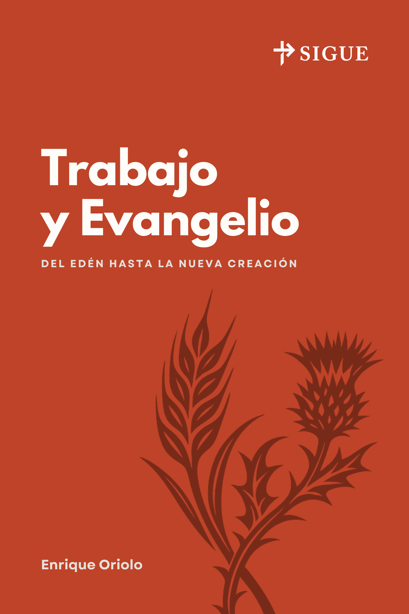

Material para seguir a Cristo, juntos.
Libros cortos, guías de discipulado y estudios bíblicos semanales, pensados para grupos pequeños y para el acompañamiento uno a uno. Gratis para descargar, compartir y usar en tu iglesia.

Trabajo y Evangelio
Del Edén hasta la nueva creación
Por Enrique Oriolo
¿Por qué trabajamos? Un recorrido por la historia de la redención que muestra cómo el evangelio transforma nuestra manera de entender el trabajo diario, desde el huerto del Edén hasta la nueva creación.
Estudios bíblicos
«Id, pues, y haced discípulos a todas las naciones… enseñándoles que guarden todas las cosas que os he mandado.»
Cómo usar SIGUE
Elige un recurso
Explora los libros y estudios bíblicos y descarga el que se ajuste a tu grupo.
Reúne tu grupo
Cada guía está pensada para un grupo pequeño o para el discipulado uno a uno.
Descarga y comparte
Imprime, reenvía y multiplica. Todo el material es gratuito para la iglesia.